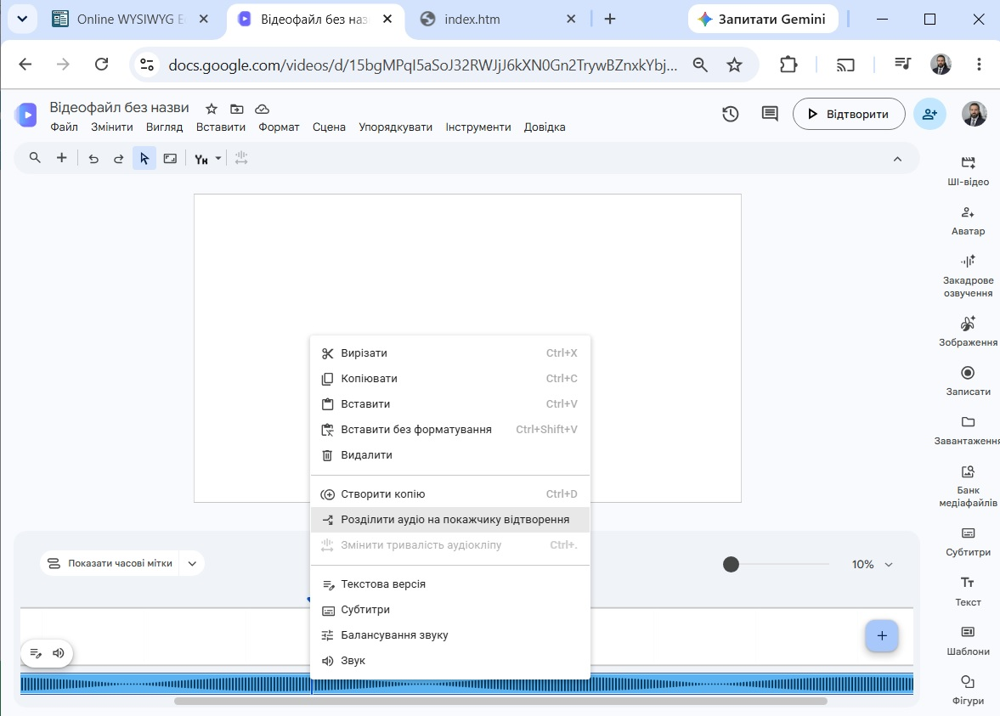

<table style="height: 221px; margin-left: auto; margin-right: auto;" width="688">
<tbody>
<tr style="height: 11.6px;">
<th style="width: 680.667px; height: 11.6px; background-color: yellow;">
<p><iframe src="menu.htm" width="700" height="110"></iframe></p>
</th>
</tr>
<tr style="height: 254px;">
<td style="width: 680.667px; height: 254px; vertical-align: top;">
<p style="text-align: justify;">Сучасні відеоредактори можуть працювати з аудіо так само, як і з відео. Але трохи інакшою є справа із Vids. Ви можете вставити аудіо у проект. Воно займе своє місце під смугою для відеосцен на часовій шкалі, як це відбувається у більшості відеоредакторів. Але слід знати, що аудіо у Vids буде відтворюватися повністю, якщо над ним відеосцена або ланцюжок сцен триває стільки ж або довше. У противному випадку звук буде припинятися тоді, коли скінчиться показ останньої відеосцени.</p>
<p style="text-align: justify;">З цього витокає, що Google Vids може допомогти у питанні перетворення mp3 на mp4 (для цього достатньо понад смугою аудіо протягнути такої ж довжини смугу з фото, потім зберегти файл на комп'ютер). Але можливості від озвученого відео відкинути візуальну складову, а залишок зберегти у форматі mp3 не буде. По таке слід звертатися до редактора Movavi або до близької до нього онлайн-програми <a href="https://online-video-cutter.com" target="_blank">online-video-cutter.com</a></p>
<p style="text-align: justify;">Аудіодоріжка в Google Vids може скорочуватися таким же чином, як і доріжка відео, як це було описано в попередньому уроці. Команда, яка розрізає аудіо на фрагменти за місцем розташунку мітки відтворення, доступна тільки через контекстне меню (викликається правою кнопкою мишки, якщо клацнути по звуковій смузі).</p>
<p style="text-align: center;"></p>
<p style="text-align: justify;">Для кращого розуміння, як працює звук у Vids, <a href="3_1.zip">завантажте пакет німих відео</a>, запишіть диктофоном аудіофайли із звуковим супроводом, після чого застосуйте їх для озвучення німих відео.</p>
</td>
</tr>
<tr style="height: 68px;">
<th style="width: 680.667px; height: 68px; background-color: cyan;">Розробка сайта Ігоря Глаголевського, 2026 р.</th>
</tr>
</tbody>
</table>